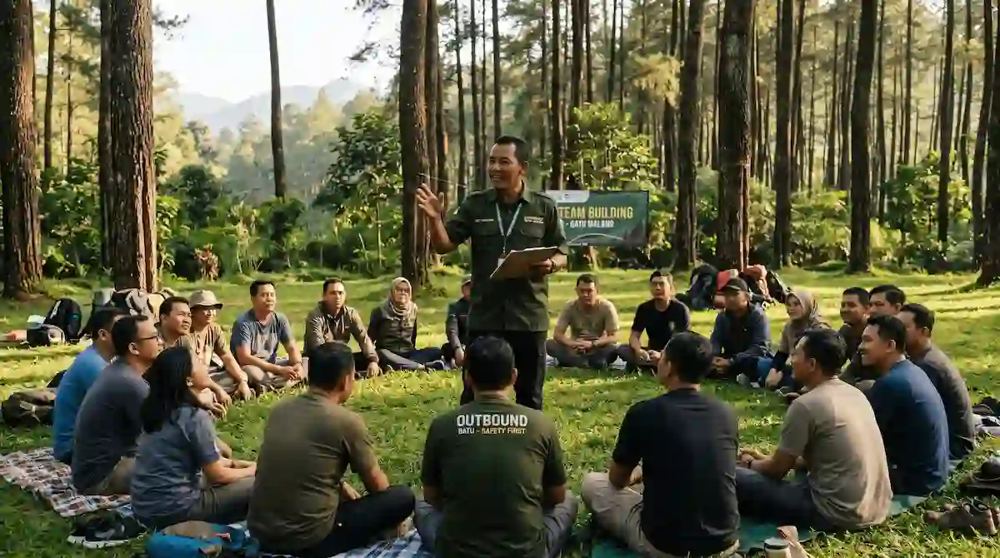

Mengapa Fasilitator Sangat Menentukan Hasil Outbound?
Banyak orang mengira kualitas outbound ditentukan oleh jenis permainannya. Padahal permainan yang sama bisa menghasilkan pengalaman yang sangat berbeda, tergantung siapa yang memandunya. Fasilitator yang baik membuat peserta merasa aman, berani mencoba, dan memahami makna di balik permainan.
Sebaliknya, fasilitator yang kurang berpengalaman mungkin hanya menjalankan aturan tanpa menggali pelajaran. Peserta pulang dengan rasa senang, tetapi tanpa pemahaman baru. Karena itu, memilih fasilitator sama pentingnya dengan memilih program. Manfaat umum kegiatan kelompok dibahas di artikel manfaat utama outbound team building bagi perusahaan di Malang.
Apa Saja Peran Fasilitator Outbound?
Peran fasilitator jauh lebih luas daripada sekadar memberi aba-aba. Tabel berikut merangkum peran utamanya:
| Peran | Gambaran | Manfaat Bagi Peserta |
|---|---|---|
| Perancang alur | Menyusun urutan permainan sesuai tujuan dan kondisi peserta. | Acara terasa runtut dan relevan. |
| Penjaga keselamatan | Memberi briefing, mengawasi, dan menangani risiko. | Peserta merasa aman. |
| Pembaca dinamika | Memperhatikan suasana dan peran tiap anggota. | Permainan menyesuaikan kondisi kelompok. |
| Pemandu refleksi | Mengajukan pertanyaan untuk menggali pelajaran. | Pengalaman menjadi pemahaman. |
| Penghubung dengan panitia | Berkoordinasi tentang jadwal dan perubahan. | Acara berjalan sesuai rencana. |
Gambaran di atas hanya contoh. Peran sebenarnya dapat berbeda sesuai jenis kegiatan dan kebutuhan Anda.
Kemampuan Apa yang Harus Dimiliki Fasilitator yang Baik?
Tidak ada satu kriteria tunggal, tetapi beberapa kemampuan berikut biasanya menjadi tanda fasilitator yang andal:
- Komunikasi jelas: Mampu menjelaskan aturan dengan sederhana dan menarik.
- Kepekaan terhadap kelompok: Mampu membaca suasana dan menyesuaikan tempo.
- Kemampuan bertanya: Memancing refleksi tanpa menggurui.
- Ketegasan yang ramah: Menjaga aturan dan keselamatan tanpa merusak suasana.
- Kemampuan menyesuaikan: Mengubah permainan saat kondisi lapangan atau peserta berubah.
- Pemahaman keselamatan: Mengenali risiko dan tahu langkah bila terjadi insiden.

Bagaimana Memilih Fasilitator yang Tepat?
Saat berdiskusi dengan vendor, ajukan pertanyaan yang menggali kemampuan fasilitator. Tanyakan pengalaman menangani kelompok serupa dengan peserta Anda, dan minta contoh rancangan acara. Bila memungkinkan, berdiskusi langsung dengan fasilitator yang akan bertugas agar Anda merasakan cara berpikir dan berkomunikasinya.
Perhatikan juga bagaimana ia menanggapi kebutuhan Anda. Fasilitator yang baik tidak langsung menawarkan paket, melainkan bertanya tentang tujuan, profil peserta, dan tantangan yang dihadapi tim. Ide permainan yang dapat dibicarakan bersama ada di artikel 7 rekomendasi game outbound team building seru di Batu Malang.
Bagaimana Bekerja Sama dengan Fasilitator Sebelum Acara?
Hasil terbaik muncul bila panitia dan fasilitator bekerja sebagai satu tim. Berikan informasi selengkap mungkin: tujuan kegiatan, jumlah dan usia peserta, kondisi kesehatan yang perlu diperhatikan, serta dinamika tim yang sedang berlangsung. Semakin lengkap informasinya, semakin tepat program yang dapat disusun.
Sepakati juga pembagian tugas pada hari pelaksanaan, misalnya siapa yang mengatur waktu, siapa yang mengurus konsumsi, dan siapa yang berwenang mengambil keputusan bila jadwal perlu berubah. Informasikan jadwal, pakaian, dan perlengkapan kepada peserta. Daftar lengkapnya ada di artikel checklist perlengkapan peserta outbound Batu Malang.
Bagaimana Menghadapi Peserta yang Sulit?
Setiap kelompok punya karakter berbeda. Ada peserta yang terlalu dominan, ada pula yang pendiam atau enggan ikut. Fasilitator berpengalaman tidak menegur di depan umum, tetapi mengatur peran dan pembagian tim agar semua orang mendapat ruang. Peserta yang ragu diberi pilihan peran yang tidak menuntut tampil, sehingga tetap terlibat tanpa merasa tertekan.
Apa yang Sebaiknya Dilakukan Panitia pada Hari Pelaksanaan?
Pada hari acara, beri fasilitator ruang untuk memimpin, tetapi tetap hadir sebagai pendukung. Pastikan peserta tiba tepat waktu, bantu mengatur logistik, dan jangan menyela permainan tanpa alasan penting. Bila perlu perubahan jadwal, sampaikan kepada fasilitator agar penyesuaiannya mulus. Kehadiran atasan yang ikut bermain juga memberi pesan positif kepada seluruh peserta.
Kesalahan Umum dalam Memilih dan Bekerja dengan Fasilitator
- Memilih hanya karena harga: Tanpa menilai pengalaman dan sertifikasi fasilitator.
- Tidak berbagi informasi peserta: Sehingga program kurang tepat sasaran dengan kondisi tim.
- Mengabaikan sesi refleksi: Padahal itu adalah inti dari pembelajaran eksperiensial.
- Mengharapkan fasilitator menyelesaikan semua masalah tim: Padahal dampaknya perlu didukung tindak lanjut dari pimpinan.
- Tidak mengevaluasi kinerja: Sehingga perbaikan untuk acara berikutnya sulit dilakukan.